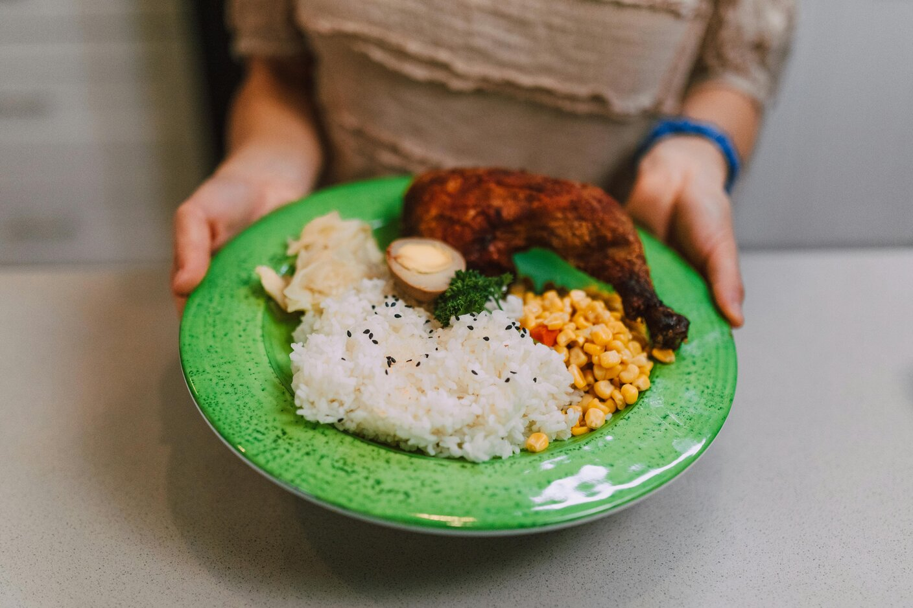
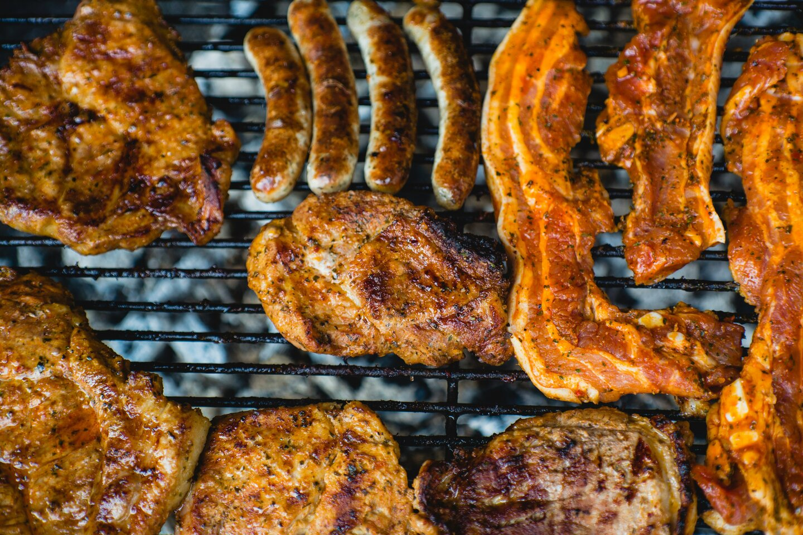
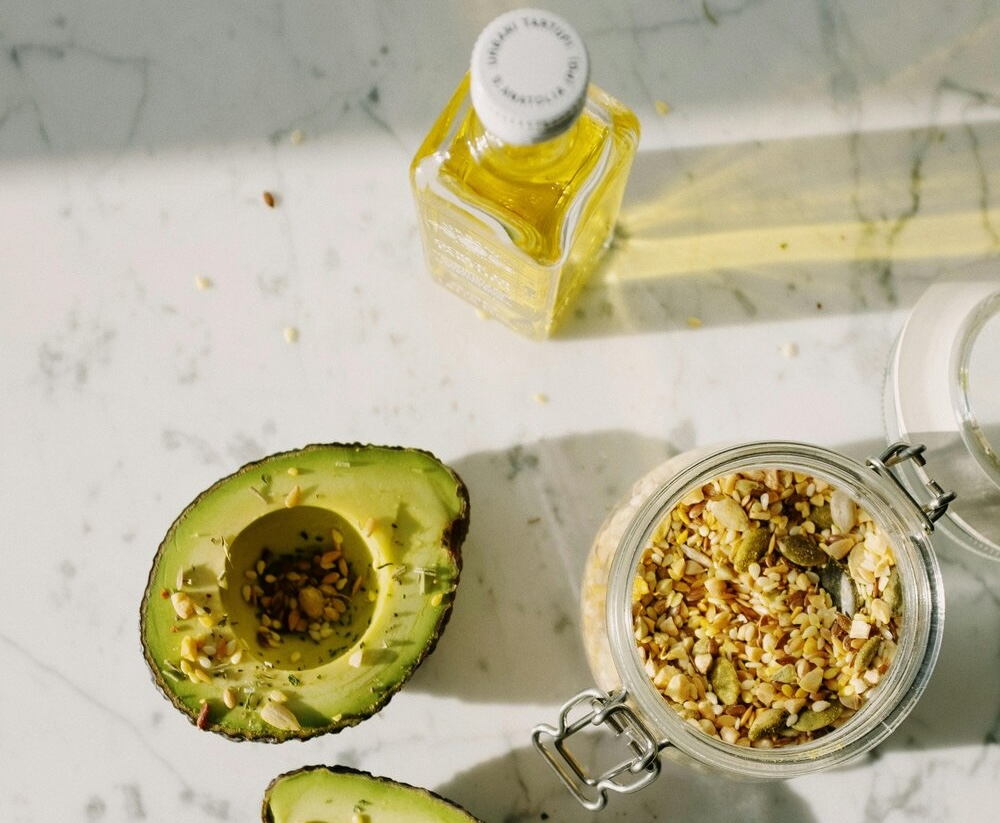
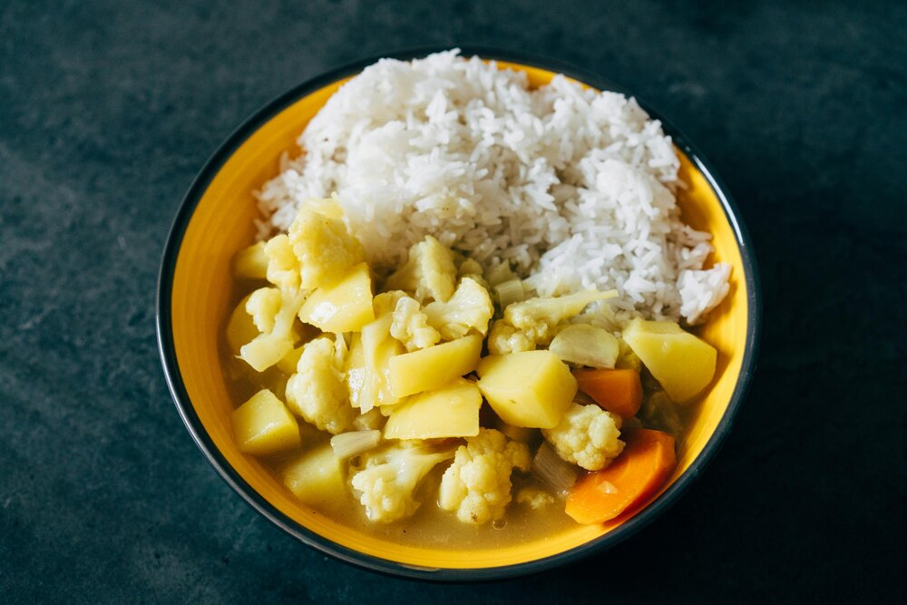

Nutrition: Fueling My Fitness
Eating the right balance of protein, fats, and carbs helps me perform better, recover faster, and stay on track with my fitness goals.

Protein: Muscle Growth & Recovery
Protein is essential for muscle growth and recovery. I aim for lean sources that keep me full and help me build strength.
- Chicken breast
- Lean beef
- Eggs & Greek yogurt
- Whey protein

Fats: Energy & Hormonal Balance
Healthy fats support energy levels, brain function, and overall well-being. I focus on natural sources that keep me satisfied.
- Avocados
- Nuts & nut butters
- Olive oil
- Fatty fish

Carbs: Energy & Performance
Carbs are my fuel for workouts and recovery. I stick to whole food sources that provide long-lasting energy.
- Rice & Potatoes
- Oats
- Fruits
- Whole wheat bread